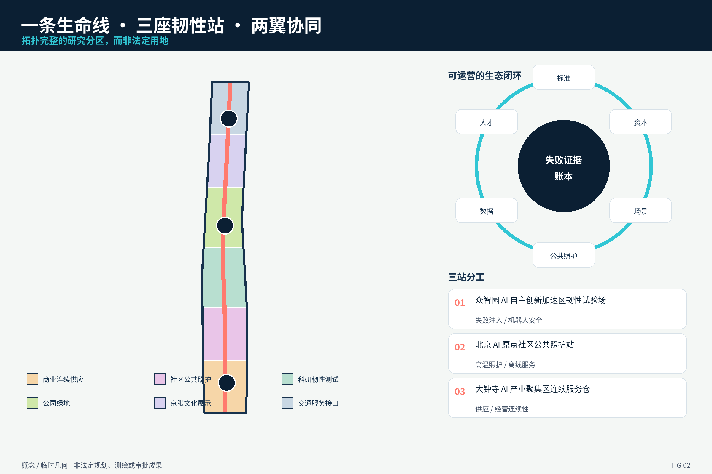
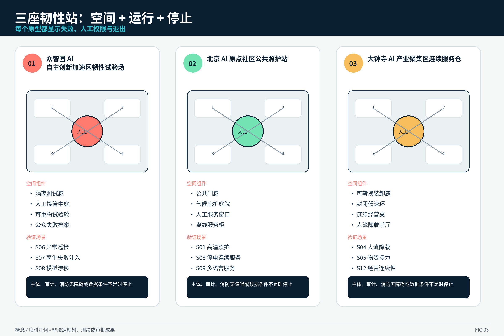
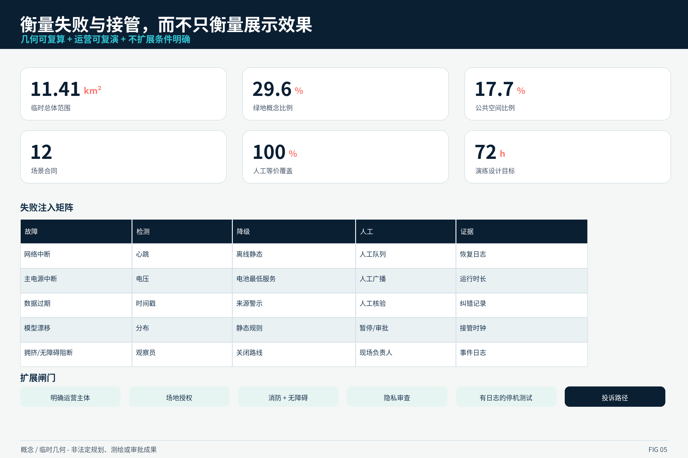

JZ-LIFE V1.3 · OFFLINE VISUAL REVIEW
OFFLINE · NO REMOTE RESOURCES · CJK TEXT SHOWN THROUGH ORIGINAL RASTER FIGURES
SITE-OVERVIEW

LAND-USE-STRUCTURE

KEY-AREAS

MOBILITY-BLUEGREEN

METRICS-EVIDENCE

NAMED STATION PROTOTYPES

REGIONAL + DELIVERY CONTRACTS

总览地图 · 三层范围 · 重点区域 · 用地分区 · 交通慢行 · 蓝绿公共空间 · 建筑 · 更新项目 · AI 场景 · 核心指标 · 任务覆盖 · 自检状态 · 来源 · 假设